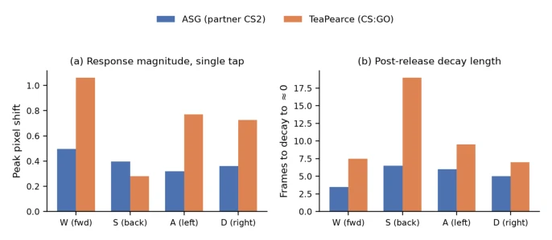
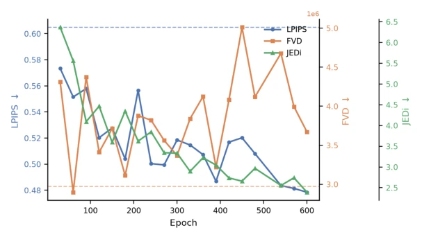
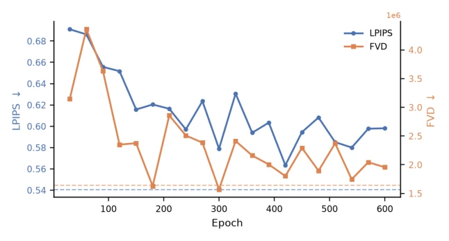

This paper essentially casts doubt on the existing world model evaluation framework. The authors find that although metrics such as FVD and LPIPS look good, the model plays as if it were cheating, capable of wall-clipping and teleportation. They propose the Virtual2Real Gap, which essentially means data quality misalignment, not a problem with the simulator itself. The Kuration SDK is a decent tool that helps filter data, but evaluation relies entirely on the authors watching replays themselves, lacking objective benchmarks, somewhat self-referential. However, pointing out the failure of metrics is indeed insightful; for those working on world models, it is a reminder: do not just look at metrics, check if the model is actually playable. Additionally, although the SDK is open-sourced, experiments are limited to a single map and game engine, raising doubts about generalization. This conclusion that data cleaning is more important than model architecture is both a blessing and a challenge for resource-constrained teams.
研究动机Motivation
动作条件世界模型的数据质量至关重要，类似 LLM 的 FineWeb 数据清洗 [Penedo et al., 2024]。但现有基准测试如 FVD [Unterthiner et al., 2018]、LPIPS [Zhang et al., 2018] 和 JEDi [Luo et al., 2024] 仅衡量视觉相似性，无法捕捉物理违规或可玩性。例如 DIAMOND 模型 [Alonso et al., 2024] 指标尚可，但交互中会出现穿墙、瞬移。Genie [Bruce et al., 2024] 等虽追求数据规模，却未解决分布偏差。现有基准要么任务特定，要么信号不足，无法指导通用世界模型训练。因此需要数据级诊断工具来桥接 Virtual2Real Gap，而非盲目依赖指标。Sim2Real 通常关注动力学保真度，而此处是数据分布问题，需区分。
Data quality for action-conditioned world models is crucial, analogous to LLM FineWeb data cleaning [Penedo et al., 2024]. However, existing benchmarks such as FVD [Unterthiner et al., 2018], LPIPS [Zhang et al., 2018], and JEDi [Luo et al., 2024] only measure visual similarity and fail to capture physical violations or playability. For instance, the DIAMOND model [Alonso et al., 2024] shows acceptable metrics but exhibits wall-clipping and teleportation during interaction. Models like Genie [Bruce et al., 2024] pursue data scale but do not resolve distribution bias. Existing benchmarks are either task-specific or lack sufficient signals, unable to guide general world model training. Therefore, data-level diagnostic tools are needed to bridge the Virtual2Real Gap, rather than blindly relying on metrics. Sim2Real typically focuses on dynamics fidelity, whereas this concerns data distribution issues, requiring distinction.
The core is the open-source Kuration SDK, used for game data cleaning. The pipeline includes data sharding, feature measurement, and filtering selection. The SDK provides multiple operators: pixel_shift measures optical flow displacement after key presses; action_state_consistency aggregates response curves to detect consistency between actions and states; collision detects wall-clipping events; slam_reconstruct reconstructs 3D trajectories. Based on these features, coverage sampling, rare event oversampling, or clustering sampling can be implemented. Training adopts the DIAMOND architecture, a two-stage diffusion model. Evaluation not only examines metrics but also checks physical consistency through interactive rollouts. The SDK ensures dataset reproducibility, supporting configuration-driven data sharding. In the specific process, data is first windowed, features per segment are calculated, then filtered according to budget. For example, the collision operator can oversample collision segments to address wall-clipping failure modes. The action-state-consistency operator filters segments with large pixel displacement to enhance training signals. Additionally, the SDK supports leakage-free train/test split, ensuring fair evaluation. All strategies and results are open-sourced with the SDK, facilitating community reproduction.

Figure 2: Action-state consistency for single key-tap movement controls, DIAMOND’s public CS:GO corpus vs. the partner CS2 corpus. (a) CS:GO responses are consistently larger in magnitude. (b) CS:GO responses take substantially longer to decay to zero after release, evidence of sustained momentum absent from the CS2 corpus.
Reproduce DIAMOND's performance on CS:GO, and train baseline_v1 on CS2 data. Test four curation strategies: coverage sampling, rare trajectories, collision-aware, action-state consistency. Results show that metrics such as FVD and LPIPS are not correlated with playability. Only the action-state consistency strategy (selecting segments with large pixel displacement) improved playability. It was found that CS:GO response magnitude is 1.4-2.1 times that of CS2. This indicates metric failure, where data features are more important. baseline_v1 outperforms DIAMOND on metrics but has worse playability. This confirms the existence of the Virtual2Real Gap. Experiments also found that even with format matching, different engines (Source vs Source 2) lead to data differences.

Figure 1: LPIPS, FVD, and JEDi for baseline_v1 across training, evaluated on the CS2 test set, plotted on three shared axes. Dashed lines show the DIAMOND model on the same test set (no JEDi reference exists on this test set). LPIPS improves with noise; FVD is competitive only at early epochs and then oscillates; JEDi improves at every evaluated checkpoint but playability is still worse.

Figure 3: LPIPS (left axis) and FVD (right axis) at each 30-epoch checkpoint of our 600-epoch DIAMOND reproduction on CS:GO, plotted on a shared axis. Dashed lines mark DIAMOND’s reported values. FVD crosses below the paper’s reported value at epoch 180 and reaches its best value at epoch 300; after that, both metrics plateau and oscillate without a consistent trend even though training loss continues to decrease monotonically.